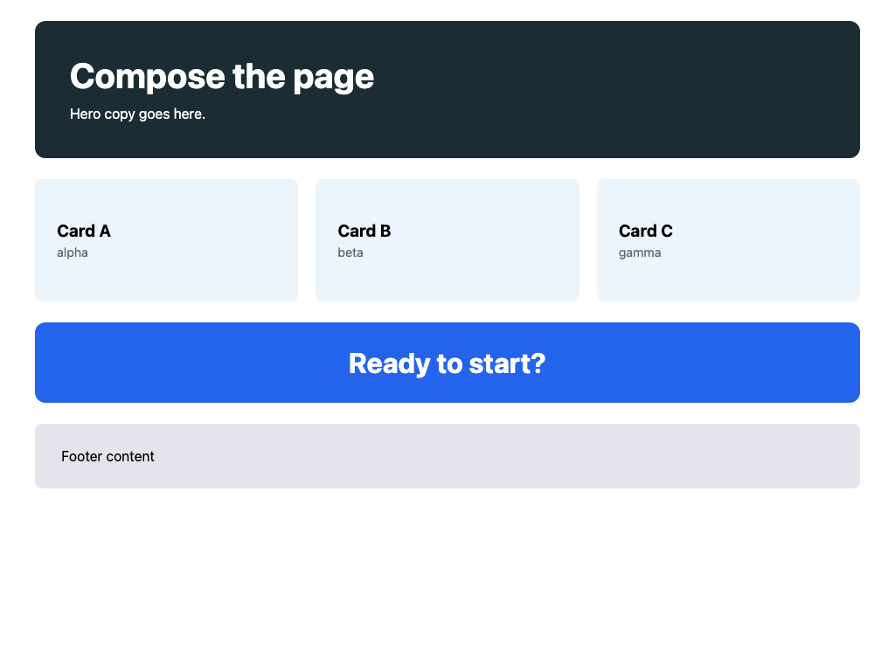
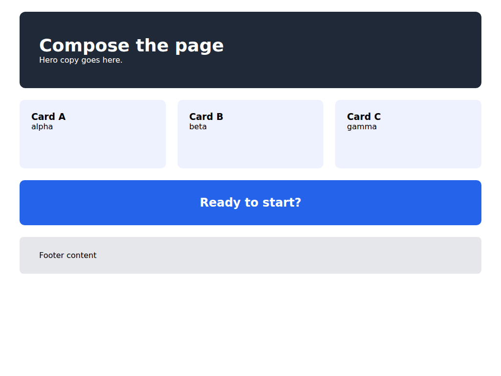
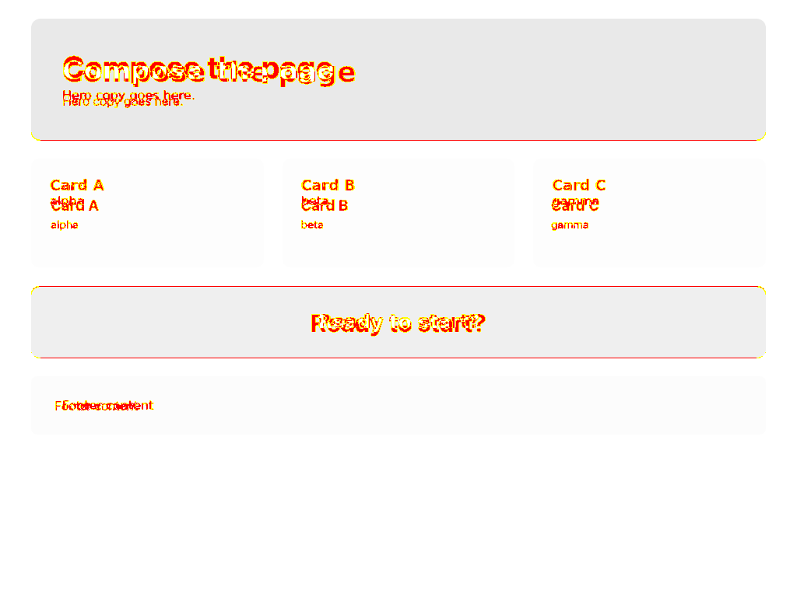

apm install mizchi/vlmkit
vlmkit / UI verificationNode.js 24+v0.9.0
VLM-assisted UI.
Verified in the browser.
vlmkit connects an AI agent's VLM vision to real-browser measurements, so it can implement UI from screenshots, find breakage, fix it, and prove the result.
Install one skill. The AI picks and runs the right UI workflow.
npx skills add mizchi/vlmkit
Need APM first? curl -sSL https://aka.ms/apm-unix | sh
KEY-FREE BY DEFAULT — most gates need no API key

AGENT OUTPUT- structure
- 6 / 6
- component IoU
- 0.97–0.99
- pixel diff
- 1.40%
VERIFIED BY VLMKIT
- 01 VLM VISION
- 02 DOM GEOMETRY
- 03 PIXEL DIFF
- 04 BEHAVIOR GATES
01 / REAL OUTPUT
Actual output,
measured.
The VLM reads visual intent. vlmkit turns the result into measurements an agent can act on, then reruns the browser until the implementation converges.


CASE 01 / VLM IMPLEMENTATION
A small model rebuilt the page from pixels alone.
Haiku used its vision with vlmkit's deterministic signals. Four rounds produced all copy, all six regions, the five-color palette, and 0.97–0.99 component IoU.
Read the full runCASE 02 / ADOPTION FEEDBACK
It found defects the existing VRT suite missed.
At 375px, integrity found 13px of page overflow. During the fix it caught a new button protruding 29px past its parent—with the selector and exact delta. Four captured states moved from DEFECTS to CLEAN.
page-overflow-x · 375px · +13pxbutton:nth-of-type(5) · +29pxCASE 03 / MIGRATION
A visual migration reached zero drift.
An agent migrated Tailwind markup to vanilla CSS using only VRT feedback, reaching 0.0% pixel diff across 7 viewports in 3 rounds.
Read the migration report02 / THE LOOP
Turn visual opinions
into fixable facts.
A kickback returns the broken location and measurements. Fix it, run again, and keep going until green.
-
01
MEASURE
Measure in a real browser
Capture DOM geometry, rendered pixels, computed styles, and accessibility states under identical conditions.
-
02
KICK BACK
Return the exact location
Go beyond “failed” with the viewport, selector, diff size, and a concrete direction for the fix.
-
03
PROVE
Prove it again
People and agents rerun the same gates and share a single exit-code contract for done.
03 / ROUTE THE TASK
Route the task
with one command.
No reference image? Tracking change? Defining release conditions? The entry point stays short and the result stays machine-readable.
NO REFERENCE / 3 VIEWPORTS
04 / PRINCIPLE
Vision proposes.
Measurements decide.
An agent saying “done” does not make the page correct. vlmkit turns visual claims into reproducible measurements.
“The loop is the product.”
Deterministic
The same input gets the same verdict—geometry and pixels, not a VLM's opinion.
Actionable
Kickback includes the viewport and selector, connecting each failure to the next edit.
Shared by people and agents
CLI, Playwright, MCP, or CI: every entry point follows the same exit-code contract.
05 / AGENT SKILL
Install once.
Ask naturally.
Add vlmkit once—there are no skill names to learn. Describe the outcome, and the AI classifies the request and artifacts, loads the right workflow, and runs it until the checks pass.
ROUTER 1 install · automatic routing · 11 workflows
00 / Meta entry
vlmkit
Activates automatically for frontend work and selects the matching workflow. It never asks you to pick a skill, and prepares the CLI and Chromium only when needed.
- “Implement this mock.”
mock-markup - “Check responsiveness and interactions.”
dynamic-markup - “Turn this spec into stable tests.”
spec-to-playwright
What the AI can choose
01 / VERIFY
Everyday verification
Check HTML/CSS with no reference design through integrity, copy, responsive, and interaction gates, or scope a diff to one component.
markup-assistcomponent-vrt
02 / CREATE
UI creation
Recreate static or dynamic pages from mocks, references, UI Contracts, and behavior briefs.
mock-markupauto-markupdynamic-markup
03 / TEST
Test generation
Turn natural-language specs into Playwright tests, reproducible VRT, and drift healing.
spec-to-playwright
04 / MONITOR
Comparison and monitoring
Explain render deltas, watch recurring regressions, and judge visual equivalence after migrations.
vrt-markup-synthvrt-visual-diffvrt-regression-watchvrt-migration-eval
05 / EVALUATE
Evaluation and hardening
Measure repair performance on known CSS regressions and improve agent-facing tool usability.
vrt-css-fix-loopagent-validation-loop
ONE INSTALL / APM
Install with APM
Install or update APM with its official bootstrap, then add the single automatic router.
curl -sSL https://aka.ms/apm-unix | shapm install mizchi/vlmkitONE INSTALL / SKILLS CLI
Install with skills CLI
Add the same automatic router directly through npx.
npx skills add mizchi/vlmkit06 / START NOW
Measure the page
you have now.
Node.js 24+. Chromium setup is required only once.